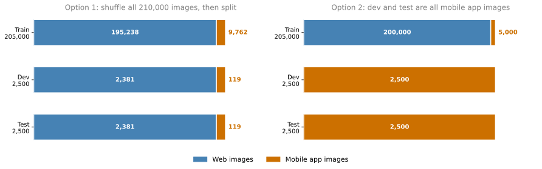
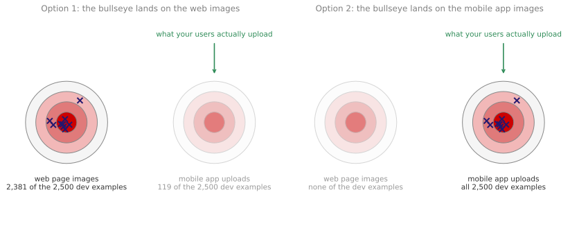
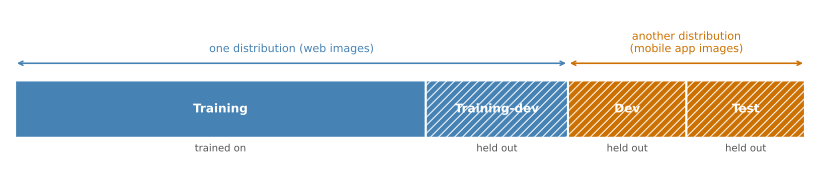
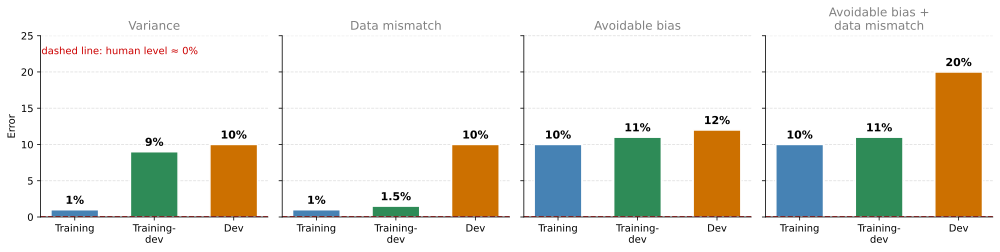
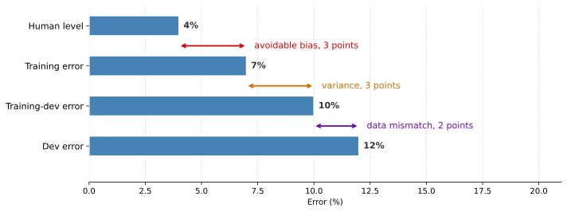
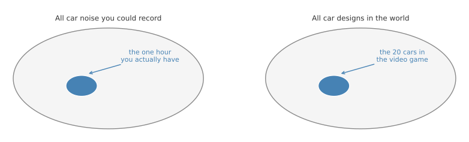

Mismatched Training and Dev/Test Sets
deep-learning
ml-strategy
data-mismatch
Splitting data when training comes from a different distribution than dev and test, using a training-dev set to spot data mismatch, and how to address it.
Deep learning algorithms have a huge hunger for training data. They often work best when you can find enough labeled training data to put into the training set. This has led many teams to take whatever data they can find and shove it into the training set just to have more of it, even when some of that data, or maybe a lot of it, does not come from the same distribution as the dev and test data. So more and more teams now train on data that comes from a different distribution than their dev and test sets. There are some subtleties and some best practices for dealing with that situation, and this page covers them.
Training and Testing on Different Distributions
Say you are building a mobile app where users upload pictures taken from their cell phones, and you want to recognize whether each uploaded picture is a cat or not. You can get two sources of data. One is the distribution you really care about, the pictures from the mobile app, which tend to be less professionally shot, less well framed, and maybe blurrier because they were taken by amateur users. The other source is the web. You can crawl it and download a lot of very professionally framed, high resolution, professionally taken images of cats.
Suppose you do not have many users yet, so you have 10,000 pictures uploaded from the mobile app. By crawling the web you have downloaded 200,000 pictures of cats.
What you really care about is that your final system does well on the mobile app distribution of images, because in the end your users will be uploading pictures like those and you need your classifier to do well on them. But now you have a dilemma. You have a relatively small data set drawn from the distribution you care about, and a much bigger data set drawn from a different distribution, where the images simply look different from the ones you actually want. You do not want to use only the 10,000 mobile images, because that leaves you with a small training set. Using the 200,000 web images seems helpful, but they are not from the distribution you want.
Option That Shuffles Everything Together
Here is one thing you could do. Put both data sets together so that you have 210,000 images, then randomly shuffle them into a train, dev, and test set. Say you have decided your dev and test sets will be 2,500 examples each, which leaves 205,000 examples for training.
Setting up your data this way has one advantage. Your training, dev, and test sets now all come from the same distribution, which makes things easier to manage. But it has a huge disadvantage. Of the 2,500 examples in your dev set, most will come from the web page distribution rather than from the mobile app distribution you actually care about. Out of your total of 210,000 images, 200,000 come from web pages, so in expectation about 2,381 of the 2,500 dev examples come from web pages and only about 119 come from mobile app uploads. The exact numbers vary depending on how the random shuffle went, but that is the average.
Remember that setting up your dev set is telling your team where to aim the target. Aiming it this way tells the team to spend most of its effort optimizing for the web page distribution of images, which is not what you want. So this first option is a bad idea, because it points the team at a different distribution of data than the one that matters.
Option That Aims at the Mobile App Distribution
Instead, take the second option. The training set is still 205,000 images, but now it holds all 200,000 images from the web plus 5,000 images from the mobile app. The dev set is 2,500 images from the mobile app, and the test set is 2,500 images also from the mobile app.
The advantage of this second split is that you are now aiming the target where you want it to be. You are telling your team that the dev set holds data uploaded from the mobile app, that this is the distribution of images you really care about, and that the job is to build a system that does really well on it.

Put the two options side by side and the difference is where the bullseye sits. Under option 1 almost every arrow the team fires is aimed at web page images, because that is what almost the whole dev set is made of, while the distribution the product is judged on sits off to the side barely represented. Under option 2 every arrow is aimed at the mobile app distribution, which is exactly the one your users generate. The disadvantage is that your training distribution is now different from your dev and test distributions. But this split gets you better performance over the long term, and there are specific techniques for handling a training set that comes from a different distribution than the dev and test sets, which the rest of this page covers.
Speech Activated Rearview Mirror
Here is another example. Say you are building a brand new product, a speech activated rearview mirror for a car. This is a real product in China that is making its way into other countries. You replace the mirror with one you can talk to, so you can say something like “dear rearview mirror, please help me find navigational directions to the nearest gas station” and it handles the request.
How do you get data to train a speech recognition system for this product? Maybe you have worked on speech recognition for a long time, so you have a lot of data from other speech recognition applications, just not from a speech activated rearview mirror.
For the training set, you can take all the speech data you have accumulated from working on other speech problems. That includes data you purchased over the years from speech recognition data vendors, who sell \(x\), \(y\) pairs where \(x\) is an audio clip and \(y\) is a transcript. Maybe you have worked on smart voice activated speakers, so you have data from that. Maybe you have worked on voice activated keyboards. Say all of these sources together give you 500,000 utterances.
For the dev and test sets you have a much smaller data set that actually came from a speech activated rearview mirror. Because users are asking for navigational queries or trying to find directions, this data has many more street addresses in it. That distribution is very different from the one on the left, but it is the data you care about, because it is what your product needs to do well on, so it is what your dev and test sets should be.
One reasonable split is to set the training set to the 500,000 utterances and make the dev and test sets 10,000 utterances each, drawn from the actual speech activated rearview mirror. Alternatively, if you do not need all 20,000 rearview mirror examples in the dev and test sets, you can move half of them into the training set. Then the training set is 510,000 utterances, including all 500,000 from the other sources and 10,000 from the rearview mirror, while the dev and test sets are 5,000 utterances each. This gives you a much bigger training set than if you had used only rearview mirror data for training.
In both of these examples, allowing the training set to come from a different distribution than the dev and test sets gives you much more training data, and that causes the learning algorithm to perform better. One question you might ask is whether you should always use all the data you have. The answer is subtle, and it is not always yes.
Review Questions
1. You have 10,000 mobile app images and 200,000 web images, and you shuffle all 210,000 together before splitting off a 2,500 example dev set. Roughly how much of that dev set comes from the mobile app, and why does this matter?
TipAnswer
About 119 of the 2,500 examples, because mobile images are only 10,000 out of 210,000, and the other 2,381 or so come from web pages. It matters because the dev set is where you tell your team to aim. A dev set that is 95 percent web images points months of work at the web distribution, when the product actually has to work on blurry, amateur mobile photos.
1. What do you give up by putting all the mobile app images into the dev and test sets and leaving the training set dominated by web images?
TipAnswer
You give up the guarantee that the training distribution matches the dev and test distributions. That is a real cost, because it breaks the usual way of reading the gap between training error and dev error, and it introduces a new failure mode called data mismatch. The trade is worth making, because the target now sits where you actually want to hit, and it buys much better performance over the long term.
1. In the speech activated rearview mirror example, why put 10,000 of the 20,000 rearview mirror utterances into the training set instead of splitting all 20,000 between dev and test?
TipAnswer
Because dev and test sets of 5,000 utterances each are still large enough to evaluate against, and the 10,000 that move into the training set let the algorithm see some data from the distribution it will actually be judged on. The training set grows to 510,000 utterances while the dev and test sets still consist entirely of rearview mirror data, so the target does not move.
Bias and Variance with Mismatched Data Distributions
Estimating the bias and variance of your learning algorithm helps you prioritize what to work on next. But the way you analyze bias and variance changes when your training set comes from a different distribution than your dev and test sets.
Keep using the cat classification example, and say humans get near perfect performance on it, so Bayes error is nearly 0 percent. To carry out error analysis you usually look at the training error and at the error on the dev set. Say in this example the training error is 1 percent and the dev error is 10 percent.
If your dev data came from the same distribution as your training set, you would say you have a large variance problem, because the algorithm is not generalizing well from the training set, which it does well on, to the dev set, which it suddenly does much worse on. But when the training data and the dev data come from different distributions, you can no longer safely draw that conclusion. Maybe the algorithm is doing just fine on the dev set, and the training set was simply easy because it held high resolution, very clear images, while the dev set is much harder. So maybe there is no variance problem at all, and the gap just reflects a dev set full of images that are more difficult to classify.
The problem with this analysis is that going from the training error to the dev error changes two things at once. First, the algorithm saw the data in the training set but not the data in the dev set. Second, the distribution of data in the dev set is different. Because two things changed at the same time, it is hard to tell how much of that 9 percentage point increase in error comes from the algorithm not having seen the dev data, which is the variance part of the problem, and how much comes from the dev data simply being different.
Training-Dev Set
To tease these two effects apart, define a new piece of data called the training-dev set. It is a subset carved out of the training data, so it has the same distribution as the training set, but you do not train your neural network on it.
Previously you had a training set with one distribution and dev and test sets sharing a different distribution. Now randomly shuffle the training set and carve out a piece of it to be the training-dev set. Just as the dev and test sets share a distribution, the training set and the training-dev set share a distribution. The difference is that you train your network only on the training set proper. You do not run backpropagation on the training-dev portion.

To carry out error analysis, look at the error of your classifier on the training set, on the training-dev set, and on the dev set.
Say the training error is 1 percent, the error on the training-dev set is 9 percent, and the error on the dev set is 10 percent, the same as before. Going from the training data to the training-dev data, the error jumped a lot. The only difference between those two sets is that the network was trained explicitly on the first and not on the second. So this tells you that you have a variance problem. The training-dev error was measured on data from the same distribution as the training set, so even though the network does well on the training set, it is not generalizing to data from that same distribution that it had not seen before.
Now look at a different example. The training error is 1 percent, the training-dev error is 1.5 percent, and the dev error is 10 percent. Now you have a fairly small variance problem, because moving from data the network has seen to data from the same distribution that it has not seen raises the error only slightly. The error really jumps when you move to the dev set. This is a data mismatch problem. The learning algorithm was not trained explicitly on either the training-dev data or the dev data, but those two sets come from different distributions. Whatever the algorithm has learned works great on training-dev and does not work well on dev, so it has learned to do well on a different distribution than the one you care about.
Here are two more examples. Say the training error is 10 percent, the training-dev error is 11 percent, and the dev error is 12 percent, while human level performance as a proxy for Bayes error is roughly 0 percent. With that performance you have an avoidable bias problem, because you are doing much worse than human level. This is a high bias setting.
For the last example, say the training error is 10 percent, the training-dev error is 11 percent, and the dev error is 20 percent. This has two issues. The avoidable bias is quite high, because humans get nearly 0 percent error while you get 10 percent on the training set. The variance seems quite small, but the data mismatch is large. So this example has both a large avoidable bias problem and a data mismatch problem.

General Principles
The key quantities to look at are the human level error, the training set error, the training-dev set error, which comes from the same distribution as the training set but was not trained on, and the dev set error. The differences between these numbers tell you how big the avoidable bias, the variance, and the data mismatch problems are.
Say human level error is 4 percent, the training error is 7 percent, the training-dev error is 10 percent, and the dev error is 12 percent.

The gap from human level to the training error gives you a sense of the avoidable bias, because you would like your algorithm to do at least as well as, or to approach, human level performance on the training set. The gap from the training error to the training-dev error gives you a sense of the variance, meaning how well you generalize from the training set to held out data from the same distribution. The gap from the training-dev error to the dev error tells you how much of a data mismatch problem you have.
You could technically add one more number, the test set error. You should not be doing development on your test set, because you do not want to overfit it. But the gap between the dev error and the test error tells you the degree of overfitting to the dev set. Your dev set and test set come from the same distribution, so the only way to get a large gap there, doing much better on the dev set than on the test set, is by having overfit the dev set. If that happens, consider going back and getting more dev set data.
In the numbers above, each value goes up as you move down the list. That does not always happen. Say human level performance is 4 percent, the training error is 7 percent, and the training-dev error is 10 percent, but on the dev set you surprisingly do much better, at 6 percent. This shows up in practice, for example on speech recognition tasks where the training data turned out to be much harder than the dev and test sets. The first two numbers were evaluated on the training set distribution and the last two on the dev and test distribution, so if your dev and test distribution happens to be much easier for your application, these numbers can go down.
More General Formulation
When you see numbers behaving that way, a more general version of this analysis helps. Take the speech activated rearview mirror example. The numbers you have been writing down fit into a table. Along the horizontal axis, vary the data set. One column is your general speech recognition data, collected from many speech problems you have worked on, from smart speakers, from data you purchased. The other column is the rearview mirror specific speech data recorded inside the car.
Along the vertical axis, vary the way of examining the data. The first row is human level performance, meaning how accurate humans are on each of these data sets. The second row is the error on examples your neural network has trained on. The third row is the error on examples your network has not trained on.
| General speech recognition data | Rearview mirror speech data | |
|---|---|---|
| Human level | 4% | 6% |
| Error on examples trained on | 7% | 6% |
| Error on examples not trained on | 10% | 6% |
What was called human level in the earlier list is the top left box, which is how well humans do on the 500,000 utterances that went into your training set, and in the earlier example it was 4 percent. The middle left box is the training error, 7 percent in the earlier example. That is what your algorithm gets on examples it performed gradient descent on, drawn from the general speech recognition distribution. Below it is the training-dev error, usually a bit higher, which is what the algorithm gets on data from the same general distribution that it did not train on. Moving to the right, the bottom right box is the dev set error, or the test set error, which was 6 percent just now. Dev and test error are technically two numbers, but either one can go in that box. This is the error on data recorded in the car from the rearview mirror application that your network did not perform backpropagation on.
The analysis in the previous section looked at the differences down the left column and then across the bottom row. The gap from 4 to 7 measures avoidable bias, the gap from 7 to 10 measures variance, and the gap from 10 to 6 measures data mismatch.
It can be useful to fill in the remaining two entries as well. The top right box comes from asking some humans to label rearview mirror speech data and measuring how good they are at the task, and maybe that also turns out to be 6 percent. The middle right box comes from putting some rearview mirror speech data into the training set so the network learns on it as well, then measuring the error on that subset, and maybe that is 6 percent too. If those are the numbers, you are already performing at the level of humans on rearview mirror speech data, so you are doing quite well on that distribution.
Filling out the whole table does not always give you one clear path forward, but it sometimes gives you additional insights. Comparing the two human level numbers in this case tells you that rearview mirror speech data is actually harder for humans than general speech recognition, because they get 6 percent error rather than 4 percent. For most problems, examining just the left column and the bottom row is enough to point you in a promising direction, but sometimes the whole table is worth filling in.
You have already seen many ideas for addressing bias and many techniques for addressing variance. Data mismatch is the new problem here. Training on data from a different distribution than your dev and test sets gets you more data and really helps performance, but it introduces this third possible source of error, and the next section covers what to do about it.
Review Questions
1. Why can you not conclude that a 1 percent training error and a 10 percent dev error means high variance when the training and dev sets come from different distributions?
TipAnswer
Because two things changed at once between those two numbers. The algorithm saw the training data and not the dev data, which is the variance effect, and the dev data comes from a different distribution, which may simply be harder. The 9 percentage point gap could be caused by either effect, or by both, and the two numbers alone cannot separate them.
1. What is a training-dev set, and what makes it different from the dev set?
TipAnswer
It is a piece carved out of the training data after shuffling, so it has the same distribution as the training set, and the network is never trained on it. The dev set is also held out, but it comes from the distribution you care about, which is different. Holding both out means the only difference between the training-dev error and the dev error is the distribution, so the gap between them isolates data mismatch.
1. Training error is 1 percent, training-dev error is 1.5 percent, and dev error is 10 percent. What is the diagnosis?
TipAnswer
Data mismatch. Moving to unseen data from the same distribution costs only half a percentage point, so variance is small. The error then jumps 8.5 points when the distribution changes, which means the algorithm has learned to do well on a distribution other than the one you care about.
1. Human level is 4 percent, training error is 7 percent, training-dev error is 10 percent, and dev error is 12 percent. How large is each of the three problems?
TipAnswer
Avoidable bias is 3 percentage points, from human level to training error. Variance is 3 percentage points, from training error to training-dev error. Data mismatch is 2 percentage points, from training-dev error to dev error. All three are present, and the first two are the larger ones.
1. What does a large gap between dev error and test error tell you, given that the two sets come from the same distribution?
TipAnswer
That you have overfit the dev set. Since both sets are drawn from the same distribution, there is no distribution effect to explain the gap, so doing much better on dev than on test means you tuned too many decisions against the dev set. The usual response is to go and get more dev set data.
1. Human level is 4 percent, training error is 7 percent, training-dev error is 10 percent, and dev error is 6 percent. Why do the numbers go down, and what should you do?
TipAnswer
The first three numbers are measured on the training distribution and the last one on the dev and test distribution, so a dev set that is easier than the training set can produce a lower error. Nothing is broken. This is the case where the fuller table is worth building, adding human level performance on the dev distribution and the error on dev distribution examples the network did train on, so that the two distributions can be compared row by row.
Addressing Data Mismatch
If your training set comes from a different distribution than your dev and test sets, and error analysis shows that you have a data mismatch problem, what can you do? There are no completely systematic solutions to this, but there are some things worth trying.
Manual Error Analysis First
When there is a large data mismatch problem, the usual first step is to carry out manual error analysis and try to understand the differences between the training set and the dev and test sets. To avoid overfitting the test set, you should manually look only at the dev set and not at the test set.
As a concrete example, if you are building the speech activated rearview mirror application, you would listen to examples in your dev set to figure out how it differs from your training set. You might find that a lot of dev set examples are very noisy and full of car noise, which is one way the dev set differs from the training set. You might also find other categories of errors. Perhaps the system often misrecognizes street numbers, because there are many more navigational queries with street addresses in them, so getting street numbers right is really important.
Once you have insight into the nature of the dev set errors, or into how the dev set may be different from or harder than the training set, you can try to find ways to make the training data more similar, or to collect more data similar to your dev and test sets. If car noise in the background is a major source of error, one thing you could do is simulate noisy in-car data. If street numbers are hard to recognize, you could deliberately go and get more data of people speaking out numbers and add it to your training set.
This is a rough guideline rather than a systematic process, and there is no guarantee you get the insights you need to make progress. But this kind of manual insight, combined with an effort to make the data more similar along the dimensions that matter, often helps on a lot of problems.
Artificial Data Synthesis
If your goal is to make the training data more similar to your dev set, one of the techniques available is artificial data synthesis. Take the car noise problem. To build a speech recognition system you may not have much audio that was actually recorded inside a car with the background noise of a car or a highway.
But there is a way to synthesize it. Say you have recorded a large amount of clean audio without the car background noise, so your training set contains a clip of someone saying “the quick brown fox jumps over the lazy dog.” That sentence gets used a lot in AI for testing, because it is a short sentence that contains every letter of the alphabet. Separately you can get a recording of car noise, which is what the inside of a car sounds like when you are driving in silence. Add the two audio clips together and you have synthesized what that sentence would sound like if it were spoken in a noisy car.
That is a relatively simple audio synthesis example. In practice you might synthesize other audio effects too, such as the reverberation of your voice bouncing off the walls of the car. Through artificial data synthesis you can quickly create a lot of data that sounds like it was recorded inside a car, without going out and collecting thousands or tens of thousands of hours of data in a car that is actually driving. So if your error analysis says you should make your data sound more like it was recorded inside a car, this is a reasonable way to produce it.
Caution About Synthesizing From a Small Subset
There is one note of caution about artificial data synthesis. Say you have 10,000 hours of data recorded against a quiet background, and just one hour of car noise. One thing you could try is taking that one hour of car noise and repeating it 10,000 times so that it can be added to all 10,000 hours of clean audio. If you do that, the audio sounds perfectly fine to the human ear, but there is a risk that your learning algorithm overfits to that single hour of car noise.
Think of the set of all car noise backgrounds you could imagine recording. With just one hour of it, you may be simulating a very small subset of that space. To the human ear all of this audio sounds fine, because one hour of car noise sounds like any other hour of car noise. But you might be synthesizing from a very small subset of the space, and the network might overfit to that hour.

It may not be practically feasible to inexpensively collect 10,000 unique hours of car noise so that you never repeat the same hour. But if you could, it is possible that using 10,000 unique hours rather than one would give better performance. The challenge is that as far as your ears can tell, those 10,000 hours all sound the same as the one hour, so you can end up creating an impoverished synthesized data set drawn from a much smaller subset of the space without realizing it.
Here is another example of artificial data synthesis. Say you are building a self driving car and you want to detect vehicles and put a bounding box around each one. An idea many people have raised is to use computer graphics to simulate huge numbers of images of cars. The graphics can be quite good, and you can imagine training a decent computer vision system for detecting cars from synthesized pictures like these.
Unfortunately the same picture applies. Consider the set of all cars. If you synthesize only a very small subset of them, the images may look fine to the human eye, but you might overfit to that small subset. One idea people raise independently is to find a video game with good computer graphics of cars, grab images from it, and get a huge data set of pictures of cars. It turns out that if the video game has just 20 unique cars in it, the game still looks fine, because driving around and seeing those 20 other cars feels like a realistic simulation. But the world has many more than 20 unique car designs, and if your entire synthesized training set has only 20 distinct cars, your network will probably overfit to those 20. It is hard for a person to notice that, because even though the images look realistic, they cover such a tiny subset of all possible cars.
To summarize, if you think you have a data mismatch problem, carry out error analysis, look at the training set and at the dev set, and try to gain insight into how the two distributions differ. Then see whether you can get more training data that looks more like your dev set. One of the ways to do that is artificial data synthesis, and it does work. In speech recognition, artificial data synthesis has significantly boosted the performance of systems that were already very good. But if you use it, be cautious and bear in mind that you might be accidentally simulating data from only a tiny subset of the space of all possible examples.
Review Questions
1. Why should manual error analysis for data mismatch look at the dev set rather than the test set?
TipAnswer
Because looking closely at the test set and then making decisions based on what you see is a way of overfitting it, which destroys the test set as an unbiased estimate of final performance. The dev set exists to be looked at and tuned against, so that is where the manual examination belongs.
1. You listen to dev set examples and find that most of them are full of car noise. What are the two directions this suggests?
TipAnswer
Make the training data more similar to the dev set, for example by synthesizing noisy in-car audio from the clean audio you already have. Or collect more real data that resembles the dev and test sets. The point of the manual analysis is to identify which specific dimension, in this case background noise, is worth matching.
1. You have 10,000 hours of clean audio and one hour of car noise, and you plan to repeat that hour 10,000 times to synthesize a noisy training set. What is the risk?
TipAnswer
The network can overfit to that single hour of car noise. One hour covers only a tiny subset of the space of all car noise, and repeating it does not add any new information. It sounds fine to a human, since one hour of car noise is indistinguishable from another, which is exactly what makes this failure hard to notice.
1. Why can a video game with excellent graphics still make a poor source of synthesized training images for a car detector?
TipAnswer
Because the game may contain only 20 unique car models. That is enough for the game to look realistic while driving around, but the real world has far more car designs, so a training set built entirely from those images covers a tiny slice of the space. The network learns those 20 cars rather than cars in general, and the realism of each individual image hides the problem.